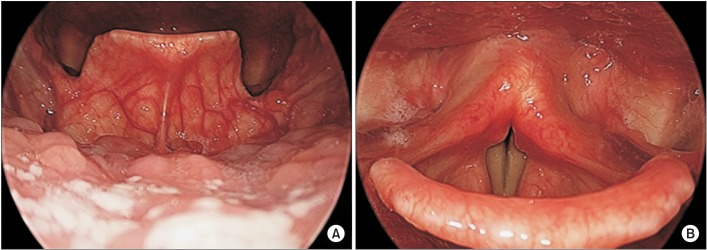

Spasmodic dysphonia

CAUSES
Scientists aren’t sure what causes spasmodic dysphonia. But they believe it’s neurological (related to a problem in an area of the brain, specifically the basal ganglia). Researchers are exploring neurological causes, as well as a possible genetic link.
Physicians and scientists do understand how spasmodic dysphonia happens. If you have the condition, the muscles in the larynx (voice box) can spasm either open or closed when you try to talk. The sudden, involuntary spasms can make the vocal cords (folds) move in abnormal ways, which affects your voice. The spasms that cause the vocal changes may come and go for no clear reason. There's been an association with stress and increased spasms.
SYMPTOMS
People with spasmodic dysphonia have described their voices as:
- Breathy or whispered.
-
Broken or jerky.
-
Hoarse.
-
“Not right.”
-
Shaky or trembling.
-
Strained
-
Tight or strangled.
DIAGNOSIS
Diagnosis may require a healthcare team, including:
- Neurologist, a doctor who specializes in the brain and nervous system.
-
Otolaryngologist (ENT), a doctor who specializes in the ear, nose, throat, head and neck. Often a laryngologist (sub-specialty of ENT) will be needed to confirm the diagnosis.
-
Speech-language pathologist, a healthcare professional who addresses voice, speech and language disorders.
TREATMENTS
There's no cure for spasmodic dysphonia. But some treatments may ease the symptoms or make the condition less severe, such as:
- Antianxiety medications. Some medications taken by mouth may lessen anxiety in people who have symptoms of spasmodic dysphonia as stress will worsen symptoms.
-
Injections of botulinum toxin (BOTOX®). BOTOX treatment involves injecting small amounts of a toxin into the vocal folds, which can relax the muscles. Each treatment can last a few months.
-
Myofascial release. This technique applies pressure on the outside of the throat and stretches the muscles to lessen symptoms.
-
Selective laryngeal adductor denervation-re-innervation (SLAD-R). This surgery involves cutting specific nerves used during speech, then reconnecting them in different ways. This may break nerve path from the brain to the vocal cords.
-
Thyroplasty. There are two types that can help. This surgery either separates the vocal folds to prevent the larynx from closing too tightly or puts the vocal folds closer together to prevent them from opening too much
Voice therapy. A speech-language pathologist can teach you ways to alter the way you speak to lessen the condition’s effects.